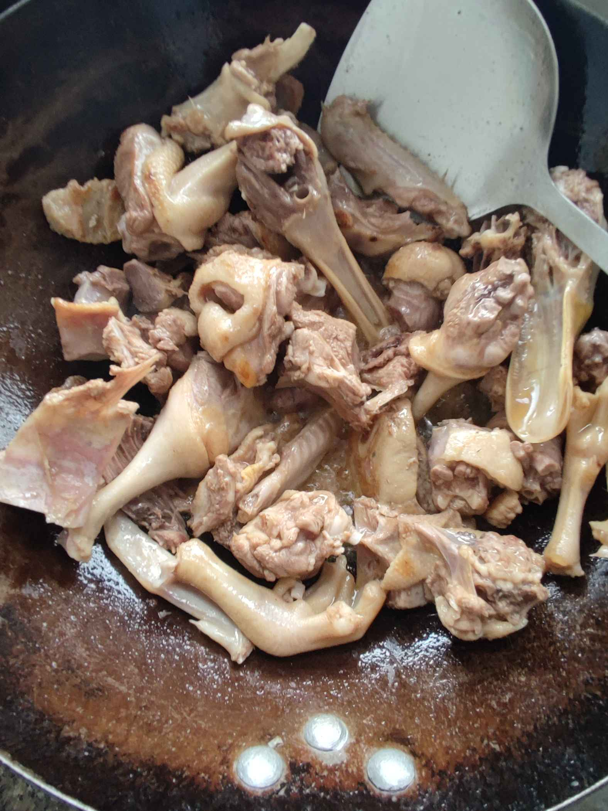
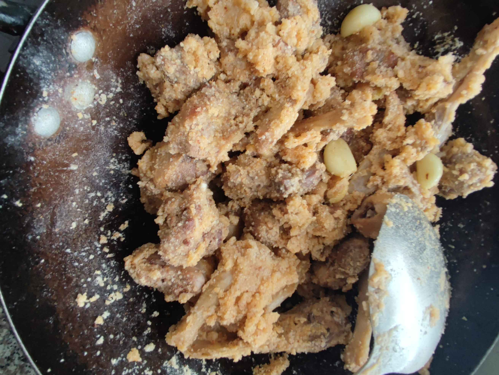

湘祁米夫鸭的做法
湖南两祁地区特色菜品，逢年过节家家桌上有。鸭肉被米粉子包裹，入口咸香回味悠长可解乡愁。
预估烹饪难度：★★★★
必备原料和工具
- 鸭子（必须新鲜现杀的）
- 糯米粉
- 粘米粉
- 蒸肉粉
- 细辣椒粉（吃辣则加）
- 白胡椒粉
- 五花肉（可加可不加）
- 姜蒜
- 盐
- 食用油
- 开水
计算
正常 3-4 人吃
- 鸭子：1000g
- 糯米粉：100g
- 粘米粉: 300g
- 蒸肉粉: 50g
- 细辣椒粉: 50g
- 白胡椒粉：5g
- 五花肉：50g
- 姜蒜：20g
- 盐：10g
- 食用油：10g
- 开水：100g
操作
- 将糯米粉、粘米粉、蒸肉粉、细辣椒粉、5 克盐、白胡椒粉倒一起搅匀
- 鸭子让热心摊主剁成蒸煮块，姜切片，蒜子剥皮，五花肉切片即可
- 热锅凉油煸炒五花肉出油，再加食用油烧热，下入鸭子煸炒
- 鸭子煸炒到表皮焦变色，下入姜蒜和盐继续煸炒香味
- 关小火倒入米粉翻炒，鸭肉均匀裹满米粉子，加入开水，少量多次的加，边加边翻炒
- 翻炒鸭肉和米粉有湿感，铲出入碗中，高压锅放水蒸 20-25 分钟
- 出锅前撒点葱花即可享用了
附加内容
这是一道家乡菜。 鸭子品种不限，这里买的是水鸭，价格 24。 蒸 20 分钟，是老鸭的话，蒸一个小时以上。 第一步中粘米粉是主要的粉子，糯米粉是加软糯口感，蒸肉粉是加五香味道，辣椒粉和胡椒粉是加复合香味。
下面贴出重要步骤以供参考：
 
如果您遵循本指南的制作流程而发现有问题或可以改进的流程，请提出 Issue 或 Pull request 。